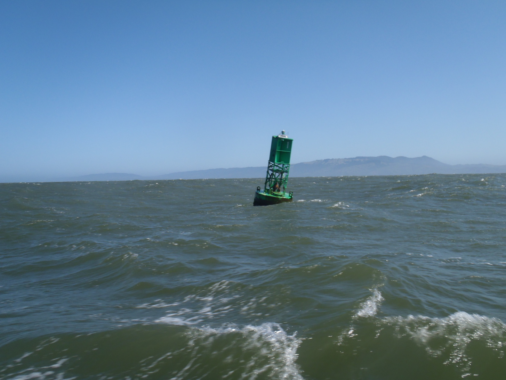

Vendredi 20 mai 2011
 On ne fait rien. On se repose à Drakes Bay.
On ne fait rien. On se repose à Drakes Bay.
Épilogue, de Drakes Bay à Oyster Point, dans la Baie de San Francisco |
Vendredi 20 mai 2011 |
|
On ne fait rien. On se repose à Drakes Bay.
|
Samedi 21 mai 2011 |

 Le vent a soufflé toute la nuit, entre 5 et 6 Beaufort. On dérape ce matin à 6 heures, pour profiter de la marée dans le Golden Gate.
On est portant, c'est bien cool.
Le vent a soufflé toute la nuit, entre 5 et 6 Beaufort. On dérape ce matin à 6 heures, pour profiter de la marée dans le Golden Gate.
On est portant, c'est bien cool.
Duxbury est derrière nous à 8:40, et on entre dans le chenal de San Francisco à 9:50, on a été vite. On est à Bonita point à 11:05, et sous le Golden Gate Bridge à 11:30. Le Bay bridge suit, à 12:20, on se dirige vers le sud. Le vent forcit, et on s'amarre au ponton visiteurs d'Oyster Point 14 heures, ça souffle à 35 nœuds. Un exercice intéressant, on est travers, sous le vent du ponton... Et voilà, la boucle est bouclée. Le lendemain, on retrouve notre ponton au bout du #5, que les gens du port nous avaient gentiment préparé. |